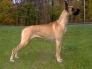

<? title('Немецкий Дог') ?>
<table border="0" class="layout">
    <colgroup span="1"><col width="25%" span="1"></col><col width="75%" span="1"></col></colgroup> 
    <tbody>
        <tr>
            <td valign="top">
                <div class="holster">
                    <div class="block_container s3 b-text b-static-text user_css_12816005438" id="e_127779753336">
                        <p><em><strong>Тарханян Татьяна</strong></em></p>
                        <p>тел.443-32-07</p>
                        <p><strong>Заходите к нам в <a href="http://club-prestige.narod.ru/">гости</a></strong></p>
                    </div>
                    <div class="block_container s3 b-image txt-center" id="e_1282743337562"><span></span></div>
                </div>
            </td>
            <td>
                <div class="holster">
                    <div class="block_container s3 b-text b-static-text user_css_12816005438" id="e_128274324353">
                        <p style="text-align: center;"><span style="color: #006600;"><span style="color: #0000ff;"><strong>Немецкий дог </strong></span></span></p>
                        <p style="text-align: justify;"><span style="color: #006600;"><span style="color: #0000ff;"><strong>Из истории породы:</strong> </span></span><span style="color: #0000ff;">Доги выведены в Германии, где они известны также как немецкие мастиффы. Изображения крупных мастифообразных собак известны во многих древних культах. Возможно, эти животные попали в страны Средиземноморья с финикийскими купцами или римскими легионами, а оттуда - в германию. В любом случае предков нынешних догов следует искать при дворах королей и в рыцарских замках средневековой Европы. Впрочем, эти собаки тогда не только символизировали высокий социальный статус владельца, но и помогали своим хозяевам на охоте на кабана, оленя и волка. </span></p>
                        <p style="text-align: justify;"><span style="color: #006600;"><span style="color: #0000ff;"><strong>Общая характеристика:</strong> </span></span></p>
                        <p style="text-align: justify;"><span style="color: #006600;"><span style="color: #0000ff;">Немецкий дог крупная, мощная, пропорционального сложения собака, которая объединяет в своём благородном облике гордость , силу и элегантность. Эта собака, благодаря прекрасным линиям и пропорциям, производит впечатление статуи. Немецкий дог- Аполлон среди всех пород собак. Эту породу украшает и благородный характер.</span></span></p>
                        <p style="text-align: justify;"><span style="color: #006600;"><span style="color: #0000ff;">Этот гигант нежно привязан ко всем членам семьи и особенно к детям, для которых доги являются прекрасными няньками.&nbsp; Он энергичен и смел, но не робок. Доги способны быть&nbsp; беспредельно преданными. Они легко дрессируются, и при рано начатой дрессировке из них получаются отличные сторожа.</span></span></p>
                        <p style="text-align: justify;"><span style="color: #006600;"><span style="color: #0000ff;"><strong>Содержание и уход: </strong>нуждаются в длительных прогулках по жесткому грунту, однако, несмотря на внушительные размеры, они не против жить в городской квартире и нежиться на кожаных диванах. Уход несложный - достаточно ежедневно чистить щёткой. </span></span></p>
                        <p style="text-align: justify;"><span style="color: #006600;"><span style="color: #0000ff;"><strong>Размеры:</strong> рост 76 см (кобели), 71 см (суки).</span></span></p>
                        <p style="text-align: justify;"><span style="color: #0000ff;">_________________________________________</span></p>
                        <p style="text-align: justify;"><span style="color: #0000ff;">&nbsp;</span></p>
                        <p style="text-align: justify;"> </p>
                    </div>
                </div>
            </td>
        </tr>
    </tbody>
</table>​